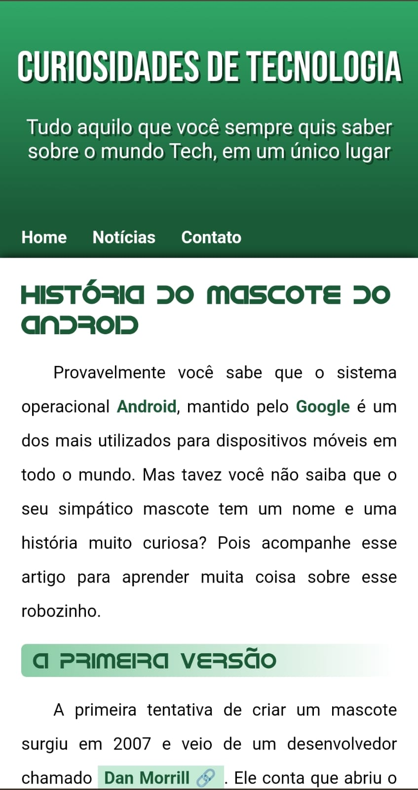
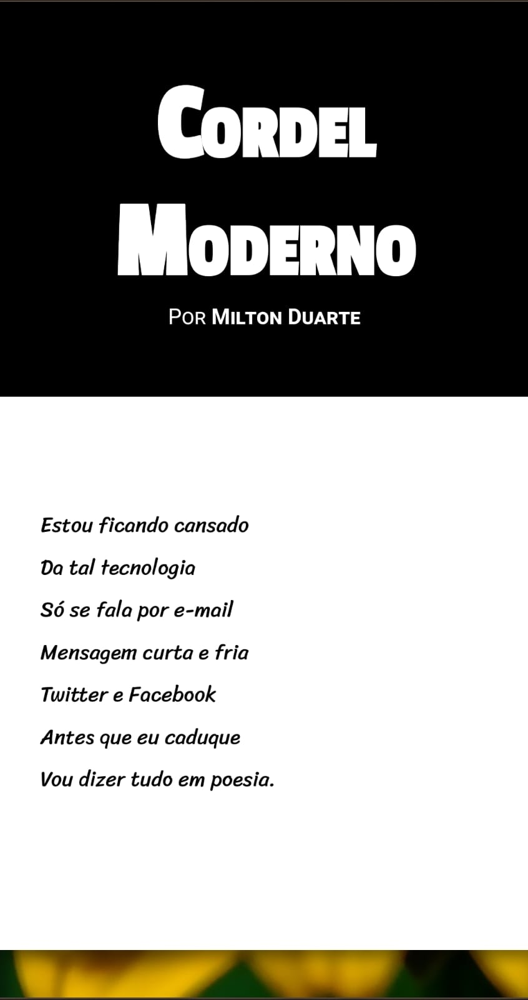
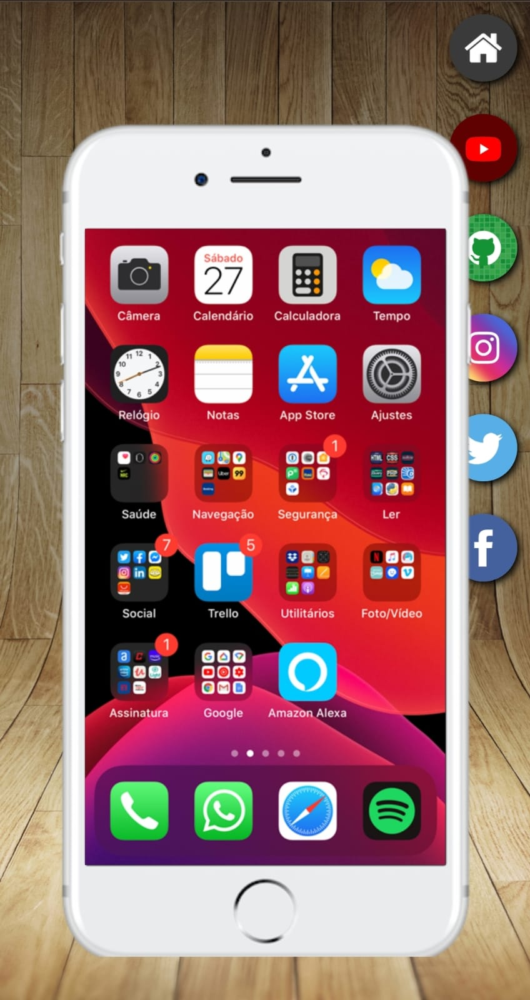

A tecnologia sempre fez parte da minha vida. Nasci em 2003, logo cresci com ela a minha volta, como em celulares, video-games, computadores, tv's e notícias também a respeito desse mundo.
O meu primeiro contato com o mundo da programação/desenvolvimento foi no ano de 2021, o ano que eu estava pensando no que eu poderia emergir. Eu sempre ouvia que a área de T.I. era algo muito bom - mas, não me falaram que era difícil também hahaha - então conversei com pessoas que trabalham no ramo e recebi diversos direcionamentos, como fazer inglês, cursos da área, é super normal ficar perdido no começo, e essas dicas me ajudaram bastante pra eu ter uma base para onde ir.
Atualmente estou cursando inglês, fazendo cursos fora da faculdade de Análise e Desenvolvimento de Sistemas, me especializando em HTML e CSS e comecei a estudar JavaScrip. Através dos meus estudos quero colocar tudo em prática e ajudar a sociedade com os meios tecnológicos que estou aprendendo.
Abaixo está alguns projetos que fiz. É só clicar e ver eles em seu desktop ou celular!
  